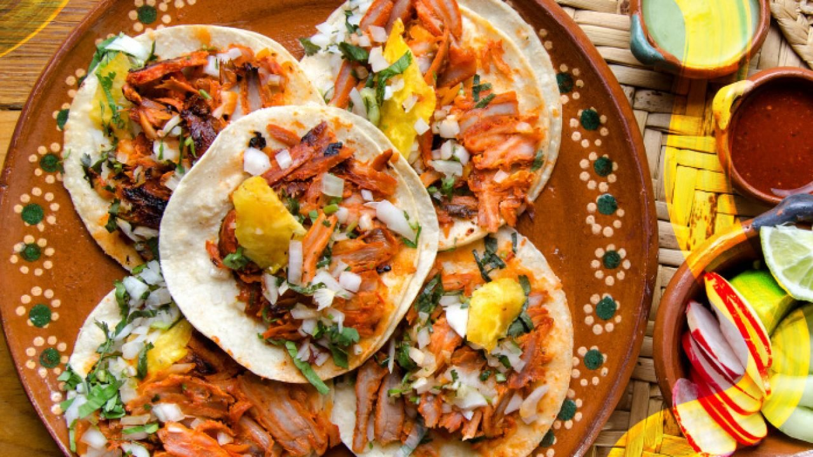

Tacos al Pastor

Descripción
Los tacos al pastor son la variedad de tacos mas popular en
la mayor parte de México. En julio de 2019 fueron elegidos como
la mejor comida del mundo por el sitio de guía grastonómica Taste
Atlas
Esta receta de tacos al pastor es muy sencilla de hacer y queda deliciosa.
Ahora puedes comer estos taquitos sin salir de casa; te encantarán.
Ingredientes
- 2 chiles anchos, desvenados e hidratados
- 2 chiles guajillos, desvenados e hidratados
- 1/2 barras de pasta de achiote
- 1/4 tazas de vinagre blanco
- 1/2 tazas de jugo de naranja, agria
- 4 cucharadas de aceite de maíz
- 1 taza de cebolla, picada finamente
- 1 taza de cilantro fresco, picado
- 1 kilo de filete de cerdo, en bisteces, salpimentados
- 1/2 cebollas, fileteada
- 6 limones, partidos en cuartos
- 2 tazas de salsa picante, a su elección
- 1 taza de piña, natural asada y picada en trocitos
Preparación
-
Licúa los chiles, el achiote, el vinagre, el jugo de naranja y reservar.
-
Unta la carne con la mezcla de achiote y cubre con el resto de la
mezcla. Deja marinar 2 horas.
-
En una sartén bien caliente saltear con un poco de aceite la cebolla
fileteada. Agrega la carne marinada hasta que este bien doradita.
- Pica la carne ya cocinada para formar los tacos.
- Acompaña con cebolla, cilantro, limón, piña y salsita.